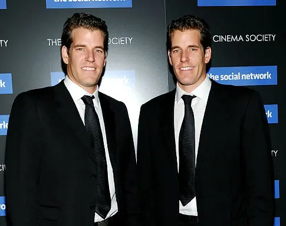

A Rede Social - Mark Zuckerberg
Sinopse do filme
Em uma noite de outono em 2003, Mark Zuckerberg, estudante de Harvard e gênio da computação,
começa a trabalhar em um novo conceito que acaba se transformando em uma rede social global
conhecida como Facebook. Seis anos e 500 milhões de amigos mais tarde, Zuckerberg se torna o
mais jovem bilionário da história com o sucesso de sua rede social. No entanto, a sua ascensão
sem precedentes traz complicações legais e pessoais.
Personagens
Jesse Eisenberg, no filme "A Rede Social", autou como Mark Zuckerberg,
o co-fundador do Facebook.
Andrew Garfield, no filme "A Rede Social", autou como Eduardo Severin,
co-fundador e melhor amigo de Mark.
Armie Hammer, no filme "A Rede Social", autou como os gêmeos Tyler e Cameron Winklevoss,
que processaram Mark.

Tyler e Cameron Winklevoss, também famosos por se tornarem alguns dos primeiros
bilionários do Bitcoin.
Justin Timberlake, no filme "A Rede Social", autou como Sean Parker, que se tornou o
presidente fundador do Facebook após sua criação e teve um papel importante na relação
entre Mark Zuckerberg e Eduardo Saverin.
Visite o perfil de Mark Zuckerberg no Facebook